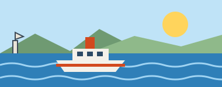

Per-element themes
The form below is ordinary HTML. A script puts each heading, paragraph, image, field, checkbox, slider, table and button inside a
<canvas-skin> element, which holds a small drawable canvas that draws that one element. No canvas covers the page.
Choose a skin in the bar at the bottom of the form: every wrapper changes, starting with the ones nearest to your finger. The controls
are the real ones. Type in the fields, tick the boxes and drag the slider in any skin.
Ferry to the island
The crossing takes 40 minutes. Boats leave from pier 3.

| Sails | Arrives | Seats left |
|---|---|---|
| 08:10 | 08:50 | 46 |
| 09:40 | 10:20 | 12 |
| 12:15 | 12:55 | 80 |
Fare rules
A ticket can be changed up to one hour before the boat leaves. Bicycles travel free.
The glass skin is a fragment shader. It models each element as a slab of glass with a flat middle and a rounded rim, bends the line of sight into the glass with Snell's law, once each for red, green and blue, and reads the page background where each ray lands. The sliders are the shader's inputs and apply to every glass element at once. The five mode buttons are sets of slider values: Regular and Clear are named after the two variants Apple documents for Liquid Glass, and the values are this page's own, not Apple's. A refractive index of 1 is air and bends nothing. With dispersion above 0 the three colours land in different places and the lines in the background get coloured edges at the rim.
Each element changes at the moment a circle growing from the tap reaches it. Before it changes, the wrapper copies its canvas into a plain canvas, and the copy fades out over the new drawing while the new skin plays its own entrance: the pencil lines are drawn on, the gel controls wobble, the terminal types the element from left to right, the blueprint extends its construction lines and counts up the size. Wrappers that are off screen change with no animation.
Show the code
- The form. No element in it knows about a canvas.
- Wrap every element, and change the skin from the tap.
CanvasSkin.wrap()puts a<canvas-skin>round each element. Writing the wrappers in the HTML by hand does the same.- The wrapper takes the element's size, and its canvas is 14 px larger on each side.
- The paint handler: read the element's state, let the skin draw, put the hit region back, fade the old drawing out.
- A change of skin is ordered by distance from a point.
- One wrapper changing: copy the old drawing, then switch.
- The CSS that gives each kind of element the same box in every skin.
- The glass shader: surface shape, refraction for three colours, frost, light.
- One WebGL context for every glass element. The background behind the element is the texture.
- The glass skin: the background as canvas calls, the call to the shader, and the 2D version used without WebGL.
- The sliders write the shader's settings and ask every wrapper to paint.
- If the shared WebGL context is lost, glass is drawn in 2D from then on.
- The pencil skin.
- The gel skin.
- The terminal skin.
- The blueprint skin.
- A lost context puts the element back as plain HTML.
- The page's own styles.
Six skins on one page
A wrapper takes its skin from the nearest ancestor with a skin attribute, so skins can be mixed. Each tile below is a <div skin="…"> with the same three controls in it. These do not follow the bar above.
Show the code
- One
skinattribute on each tile. - How a wrapper decides what kind of element it holds.
A wrapper inside a wrapper
The card below is one <canvas-skin>, and the slider and the button inside it are wrapped too. The card's canvas draws the two inner canvases as part of its picture. This follows the bar above.
Ticket 0412
Show the code
- Wrappers written in the HTML, one inside another.
How it works
- One canvas per element. The shadow root of
<canvas-skin>holds<canvas content="drawable" layoutsubtree>with onedrawable<div>that contains a<slot>. The wrapped element is slotted, so it stays in the page's DOM, in its form and in the accessibility tree, and the page's CSS still styles it. - The wrapper has the element's size. The canvas is positioned 14 px outside the wrapper on every side, which gives a skin room for a shadow or a line that overshoots. The canvas has
pointer-events: noneand the slotted element haspointer-events: auto, so the extra 14 px never takes a tap that belongs to a neighbour. - A skin is CSS plus a paint function. The CSS sets the font and colours and removes the browser's own drawing of a control (
appearance: none, no border, no background). The paint function draws the surface, then the element's own picture withdrawElementImage(), sometimes through an SVG filter set asctx.filter. - Checkboxes, radios, switches, sliders and progress bars are drawn from their state. For these the skin never draws the element's picture. It reads
checkedorvalueand draws the whole control. The native control is still drawn once per paint inside an empty clip, which puts its hit region where it lies in the layout and adds no pixels. - The glass skin is a shader that every wrapper shares. The page background is a set of CSS gradients with straight diagonal lines, and the skin has the same picture as canvas calls. For each glass element it draws the part of that picture behind the element into a plain canvas, uploads it as a texture to one WebGL context on a canvas that is not in the document, runs the shader, and copies the result into the element's own 2D canvas with
drawImage(). The shader computes a signed distance to the element's rounded rectangle, a surface height from it, the surface normal from the slope, andrefract()for red, green and blue. - One 2D context per element, and one WebGL context for the page. An element's picture can be drawn only by a canvas the element is inside, so the wrappers cannot share a WebGL context for their own pictures, and Android allows about 8 WebGL contexts in a tab. The glass shader can be shared because its input is the background, which is an ordinary canvas. The element's own picture (its text) is drawn over the glass in 2D. The effects of the other skins are SVG filters. A wrapper that is more than one screen away sets its canvas to 0 by 0.
- The glass sees the root's background and nothing else. A canvas cannot read the pixels behind it, so a glass element does not refract another element that lies under it. Glass over arbitrary content needs that content as a texture, which is the one-canvas-for-the-page design this page avoids.
Live checks
The checks wait for a tap. Each one builds its own wrappers in a corner of the window, and none of them touches the form above. Pixels are read from a drawImage() copy.
Findings
Measured in headless Chromium 157 on 2026-11-22, at 412 px wide and device scale 2, with WebGL rendered in software. Not yet run on a phone.
- One WebGL context can serve every wrapper when its input is not an element. The glass shader ran for 31 elements at load from one context, with a
texImage2D()of a sub-rectangle of a 2D canvas and adrawImage()of the WebGL canvas for each. The WebGL route has no WebGPU version yet. - A page can be themed with one small drawable canvas per element. The form has 32 wrappers, and the page has 53 with the tiles and the nested card. Each control took taps, clicks and typing at its place in the layout in every skin.
- A child of a drawable canvas is as wide as its content. A block
<div>directly inside<canvas layoutsubtree>did not fill the canvas: a heading in it was 211 px wide in a 380 px canvas. It needs an explicit width. - A block wrapper has no width of its own. Its only in-flow content is the box that holds the canvas, so in a place that sizes to content (a flex row, a grid cell with
justify-items: start) it is 0 px wide and gets no paint event. Wrappers of buttons, checkboxes, radios, switches, labels and outputs are inline and take the element's own width. The others need a container that gives them a width. - The change of skin moves nothing. Every skin gives each kind of element the same box (a 44 px button, a 28 px checkbox), so only fonts change the layout, where text wraps differently.
- Memory. At 412 px wide and device scale 2.625 the page's estimate was 12.6 MB for all canvases, and the largest canvas was 0.55 megapixels. Thirty wrapped buttons were 99 KB each at scale 2.
pointer-events: noneon the canvas andautoon its child leaves the child hit-testable.elementFromPoint()at the centre of a wrapped button returned the button, and a point in the canvas's extra 14 px returned what lies under the canvas.- A control that is never painted still works. A checkbox and a range drawn only inside an empty clip toggled on a tap and followed a drag.
- A wrapper inside a wrapper drew and took input in this browser. /nested-frames/ has a report of nested canvases that did not draw on Chrome 159 for Android, so this needs the phone.
- Not verified: everything on a phone. In particular how many small 2D canvases Chrome for Android keeps (31 had pixels at once at the top of this page), the speed of a change of skin when 20 wrappers fade at once, the SVG displacement filter of the pencil skin on every wrapper, the native picker of the wrapped
<select>, and what a screen reader reads.